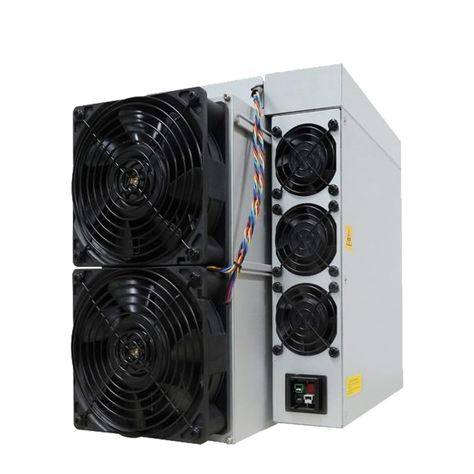

Это специализированное оборудование, созданное исключительно для майнинга криптовалют.
Его основная функция заключается в выполнении сложных математических вычислений для подтверждения транзакций в сети блокчейн.
В отличие от других видов оборудования, таких как центральные процессоры (CPU) или графические процессоры (GPU),
ASIC-майнеры оптимизированы для выполнения одного определенного алгоритма, например, SHA-256 для биткоина.
Основные назначения ASIC-майнера:
Майнинг криптовалют — основной и единственный вид использования, поскольку ASIC-майнеры разработаны исключительно для выполнения конкретных вычислений, связанных с определенным алгоритмом.
Повышение эффективности майнинга — благодаря узкой специализации, ASIC-майнеры обеспечивают гораздо более высокую производительность и энергоэффективность по сравнению с GPU или CPU.
Максимизация прибыли — высокая вычислительная мощность позволяет майнерам получать большее количество вознаграждений за блоки, что делает процесс майнинга более прибыльным.
Таким образом, ASIC-майнеры используются преимущественно для майнинга таких криптовалют, как биткоин, и являются наиболее эффективным оборудованием для выполнения этой задачи.
Преимущества и недостатки использования ASIC-майнеров в майнинге криптовалют?
Преимущества использования ASIC-майнеров:
Высокая производительность – ASIC-майнеры обеспечивают большую вычислительную мощность, чем GPU и CPU, что позволяет быстрее решать задачи.
Энергоэффективность – Они потребляют меньше энергии на единицу вычислительной мощности, что снижает затраты на электроэнергию.
Узкая специализация – Оптимизированы для выполнения конкретного алгоритма, что повышает их эффективность в майнинге.
Недостатки использования ASIC-майнеров:
Высокая стоимость – Покупка ASIC-майнера требует значительных первоначальных вложений.
Ограниченная гибкость – Работают только с одним алгоритмом, что делает их бесполезными для других криптовалют.
Быстрое устаревание – Новые модели выходят часто, что снижает актуальность старых устройств.
ASIC-майнеры vs. GPU: Что выбрать для майнинга?
ASIC-майнеры
Производительность: Гораздо более мощные для конкретных алгоритмов (например, SHA-256 для биткоина).
Энергоэффективность: Потребляют меньше энергии на единицу вычислительной мощности.
Гибкость: Поддерживают только один алгоритм, не подходят для других криптовалют.
Стоимость: Высокая стоимость на покупку, но окупаемость выше при больших объемах майнинга.
Риски: Быстро устаревают с появлением новых моделей.
GPU-майнинг
Производительность: Универсальнее, но менее мощные по сравнению с ASIC.
Энергоэффективность: Потребляют больше энергии на единицу вычислительной мощности.
Гибкость: Поддерживают множество алгоритмов, могут переключаться между криптовалютами.
Стоимость: Дешевле, но требуют большего количества устройств для значительных доходов.
Риски: Дольше остаются актуальными и могут использоваться для других задач.
Выбор:
ASIC: Если важна максимальная производительность и вы планируете майнить одну конкретную криптовалюту.
GPU: Если важна гибкость, возможность переключаться между криптовалютами и более широкий диапазон использования.

Новый ASIC-майнер от Bitmain: Antminer S21 обещает революцию в добыче криптовалют!
Анонс новой модели
Компания Bitmain, один из крупнейших мировых производителей оборудования для майнинга, представила свою новую модель — Antminer S21. Это устройство обещает задать новый стандарт в индустрии благодаря повышенной производительности и энергоэффективности.
Повышенная производительность
Antminer S21 оснащён хешрейтом в 220 TH/s, что на 15% выше по сравнению с предыдущей моделью S19. Это делает его одним из самых мощных ASIC-майнеров на рынке, позволяя пользователям более эффективно добывать криптовалюту, несмотря на постоянно растущую сложность сети.
Уникальная энергоэффективность
Одним из главных преимуществ Antminer S21 является его пониженное энергопотребление. Устройство расходует всего 19.5 J/TH, что делает его одним из самых энергоэффективных ASIC-майнеров на сегодняшний день. Это особенно важно в условиях роста цен на электроэнергию, так как сниженные затраты на энергопотребление увеличивают общую рентабельность майнинга.
Технологические новшества
Antminer S21 разработан на базе 5-нм чипов, что позволяет достичь не только высокой производительности, но и улучшенной стабильности при длительных нагрузках. Инновационная система охлаждения также играет ключевую роль, предотвращая перегрев оборудования, что увеличивает срок его службы и снижает риск поломок.
Дата выхода и цена
Массовые поставки Antminer S21 начнутся в декабре 2024 года. Предварительные заказы уже открыты, и базовая цена модели стартует от $6,500. Это делает новинку доступной как для крупных майнинговых ферм, так и для энтузиастов, желающих увеличить свою прибыль.
Прогнозы экспертов
Эксперты считают, что Antminer S21 сможет завоевать лидерские позиции на рынке ASIC-майнеров. С увеличением сложности сети биткойна и роста конкуренции среди производителей оборудования, инновации, представленные в этой модели, могут стать ключевым фактором её успеха.